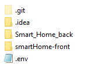
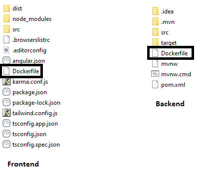
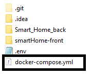

Ce lab pratique montre comment containeriser une application Smart Home full-stack en séparant clairement le backend Spring Boot (connecté à MySQL) et le frontend Angular (servi par Nginx). Il guide la création de deux Dockerfiles (build multi-stage Maven pour produire le JAR, build Angular puis copie du dist dans Nginx) et l’orchestration via docker-compose pour démarrer MySQL, backend, frontend et phpMyAdmin avec les bons ports, variables d’environnement et dépendances. À la fin, l’application est accessible sur http://localhost et l’administration de la base via http://localhost:8081 .
Pour containeriser une application Smart Home composée d'une application backend Spring Boot avec MySQL et d'une application frontend Angular, vous avez déjà créé des Dockerfiles pour chaque partie (backend et frontend) ainsi qu'un fichier docker-compose pour orchestrer ces services. Voici les étapes à suivre pour containeriser et exécuter l'application :
Cloner les projets depuis https://github.com/lachgar/smarthouse.git.
Assurer que le projet est organisé correctement, en deux dossiers principaux, un pour le backend (Smart_Home_back) et un pour le frontend (smartHome-front). Assurer que tous les fichiers nécessaires pour construire chaque partie de l'application sont présents dans ces dossiers.

Ensuite, lancer et tester les projets en local.
Créer les fichiers Dockerfiles pour le backend et le frontend.

# Stage 1: Build with Maven
FROM maven:3.8.4-openjdk-17 AS builder
WORKDIR /app
COPY ./src ./src
COPY ./pom.xml .
RUN mvn clean package
# Stage 2: Create the final image
FROM openjdk:17-jdk-alpine
VOLUME /tmp
ARG JAR_FILE=target/*.jar
COPY ${JAR_FILE} app.jar
ENTRYPOINT ["java","-jar","/app.jar"]
Étape 1: Build with Maven
FROM maven:3.8.4-openjdk-17 AS builder: Utilise l'image Maven 3.8.4 avec OpenJDK 17 comme base pour la première étape de construction et la nomme "builder".WORKDIR /app: Définit le répertoire de travail à l'intérieur du conteneur comme /app.COPY ./src ./src: Copie le répertoire source de l'application dans le répertoire de travail du conteneur.COPY ./pom.xml .: Copie le fichier pom.xml à la racine du répertoire de travail du conteneur.RUN mvn clean package: Exécute la commande Maven pour nettoyer le projet et construire le package JAR.Étape 2: Create the final image
FROM openjdk:17-jdk-alpine: Utilise l'image Alpine Linux avec OpenJDK 17 comme base pour la deuxième étape de construction.VOLUME /tmp: Définit un volume /tmp qui peut être utilisé pour stocker des fichiers temporaires ou des données persistantes.ARG JAR_FILE=target/*.jar: Définit un argument pour le fichier JAR généré lors de la construction de l'application.COPY ${JAR_FILE} app.jar: Copie le fichier JAR construit depuis l'étape précédente dans le répertoire / du conteneur et le renomme en app.jar.ENTRYPOINT ["java","-jar","/app.jar"]: Définit la commande d'entrée pour exécuter l'application Java en utilisant le fichier JAR.FROM node:14.15.0-alpine as builder
WORKDIR /app
COPY . .
RUN npm install
RUN npm run build
FROM nginx:alpine
COPY --from=builder /app/dist/smart-home /usr/share/nginx/html
Étape 1 (Construction avec Node.js) :
FROM node:14.15.0-alpine as builder : Utilise l'image Node.js 14.15.0 avec Alpine Linux comme base pour la première étape et la nomme "builder".WORKDIR /app : Définit le répertoire de travail à l'intérieur du conteneur sur /app.COPY . . : Copie tous les fichiers du répertoire actuel (machine hôte) vers le répertoire de travail à l'intérieur du conteneur.RUN npm install : Installe les dépendances du projet à l'aide du gestionnaire de paquets npm.RUN npm run build : Construit l'application selon le script de construction défini dans le projet.Étape 2 (Création de l'image finale avec Nginx) :
FROM nginx:alpine : Utilise l'image Nginx avec Alpine Linux comme base pour la deuxième étape.COPY --from=builder /app/dist/smart-home /usr/share/nginx/html : Copie l'application construite depuis l'étape "builder" (/app/dist/smart-home) vers le répertoire HTML par défaut du serveur Nginx (/usr/share/nginx/html). Cela configure Nginx pour servir les fichiers statiques de l'application construite.Créer le fichier docker-compose.yml dans le dossier racine.

version: '3'
services:
mysql:
image: mysql:latest
environment:
MYSQL_ROOT_PASSWORD: root
MYSQL_DATABASE: smart-house
ports:
- "3306:3306"
backend:
build:
context: ./Smart_Home_back
ports:
- "8085:8085"
depends_on:
mysql:
condition: service_started
environment:
SPRING_DATASOURCE_URL: jdbc:mysql://mysql:3306/smart-house
SPRING_DATASOURCE_USERNAME: root
SPRING_DATASOURCE_PASSWORD: root
healthcheck:
test: "/usr/bin/mysql --user=root --password=root --execute \"SHOW DATABASES;\""
interval: 5s
timeout: 2s
retries: 100
frontend:
build:
context: ./smartHome-front
ports:
- "80:80"
depends_on:
backend:
condition: service_started
phpmyadmin:
image: phpmyadmin/phpmyadmin
environment:
PMA_HOST: mysql
PMA_PORT: 3306
MYSQL_ROOT_PASSWORD: root
ports:
- "8081:80"
mysql:
backend:
./Smart_Home_back.frontend:
./smartHome-front.phpmyadmin:
Assurer d'être dans le répertoire où se trouve le fichier docker-compose.yml, ensuite exécuter la commande suivante pour construire les images Docker pour le backend et le frontend.
docker-compose build
Une fois que les images sont construites avec succès, lancer les conteneurs en utilisant la commande suivante :
docker-compose upAjouter l'option -d si vous souhaitez exécuter les conteneurs en arrière-plan.
Utiliser la commande suivante pour vérifier l'état des conteneurs :
docker-compose psAssurer que tous les conteneurs sont en cours d'exécution.
Une fois les conteneurs en cours d'exécution, vous pouvez accéder à votre application frontend à l'adresse http://localhost. Si vous avez configuré PHPMyAdmin, vous pouvez accéder à l'interface à l'adresse http://localhost:8081.
Ces étapes devraient permettre de containeriser et de lancer l'application Smart Home. Assurer que les fichiers de configuration (par exemple, les fichiers de propriétés Spring Boot) sont correctement configurés pour fonctionner avec les services Docker.